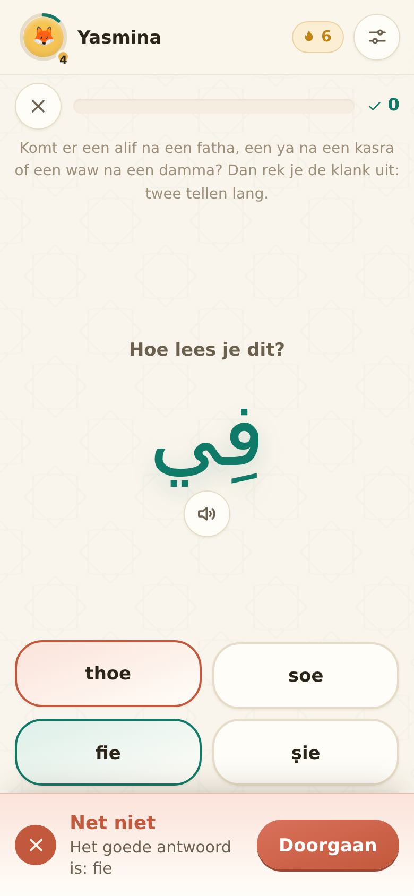
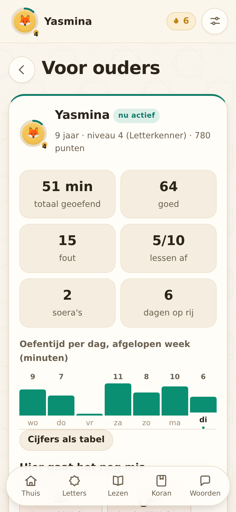

Je kind leert Arabisch lezen op de tablet die je al hebt.
Van de eerste letter tot een soera uit het hoofd. Tien minuten per dag, in spelletjes waar een kind uit zichzelf naar teruggaat. Geen appwinkel, niets installeren — je opent een link en zet hem op het beginscherm.
Werkt offline · Geen reclame · Geen account voor je kind


Jij leerde hem lopen, praten en fietsen.
Dit is het stuk waar de meeste ouders niet aan toekomen — niet uit onwil, maar omdat je de tijd niet hebt en de zaterdagles alleen niet genoeg is. Noer maakt er iets van dat tussen het avondeten en het slapengaan past.
Open de link
Op de tablet of telefoon die er al ligt. Niets downloaden, geen appwinkel, geen wachten.
Zet hem op het beginscherm
Eén tik in het browsermenu. Daarna staat Noer tussen de andere apps en werkt hij ook zonder internet.
Tien minuten per dag
Een les is klein genoeg om af te maken. Je kind ziet zijn pad groeien en wil de volgende bol halen.
Van één letter tot een soera uit het hoofd
Vier onderdelen die op elkaar voortbouwen. Je kind begint waar het staat en de app groeit mee.
Het alfabet
28 letters met alle vier hun vormen, de klank uitgelegd in Nederlandse woorden, en een ezelsbruggetje per letter.
Leren lezen
Tien lessen volgens de Qaida Noeraniyah: van losse letters via harakat en soekoen naar echt lezen. Een les gaat pas open als de vorige gehaald is.
De Koran
Twaalf korte soera's: lezen, woord voor woord de betekenis, en uit het hoofd leren in drie rondes waarin steeds meer woorden verdwijnen.
Woorden
Tien thema's — kleuren, dieren, gezin, de moskee — met een geheugenspel en een quiz.



Jouw stem doet het voor
Een computerstem spreekt Arabisch op zijn best matig uit, en op veel tablets helemaal niet. In Noer spreek je de letters, woorden en aya's zelf in — rechtstreeks in de app.
- De 28 letters inspreken kost ongeveer tien minuten, één keer.
- Je kind hoort daarna een stem die het kent, in plaats van een robot.
- De opnames blijven op het apparaat en kun je meenemen naar een tweede tablet.
Je ziet precies waar het vastloopt
Achter een pincode: hoeveel je kind heeft geoefend, welke lessen af zijn, en — het nuttigste — welke letters structureel fout gaan. Dan weet je waar je samen even bij moet gaan zitten.
- Oefentijd per dag over de afgelopen week.
- De drie letters die het vaakst misgaan, met het percentage erbij.
- Meerdere kinderen op één tablet, elk met een eigen profiel.
Wat er níet in zit
Dit is een app voor kinderen. Dat legt verplichtingen op die wij serieus nemen.
Geen account voor je kind
Wat je kind doet — naam, voortgang, opnames — blijft op het apparaat staan.
Geen reclame, geen tracking
Geen advertenties, geen meetsoftware, niets dat je kind ergens anders naartoe leidt.
Werkt zonder internet
In de auto, bij oma, op reis. Eenmaal geopend werkt de hele app offline.
Wat het kost
Eén prijs voor het hele gezin. Maandelijks opzegbaar, met één knop.
Om te proberen
Genoeg om te weten of je kind ermee doorgaat.
- Het hele alfabet
- De eerste twee leeslessen
- Drie korte soera's
Maandelijks
Voor alle kinderen in je gezin. Maandelijks opzegbaar.
- Alles: 10 lessen, 12 soera's, 10 woordthema's
- De opnamestudio en het ouderscherm
- Meerdere kinderen op één apparaat
- Nieuwe inhoud zodra die er is
Per jaar
Ruim twee maanden gratis ten opzichte van maandelijks.
- Alles uit het maandabonnement
- Eén keer betalen, een jaar rust
Voor moskeeën en weekendscholen
Eén licentie voor de hele klas, met een factuur op naam van de school. Vanaf € 295 per jaar voor zestig kinderen. Neem contact op voor een gesprek, of bekijk de flyer om mee te nemen naar het bestuur.
Veelgestelde vragen
Moet ik iets installeren?
Nee. Je opent een link in de browser van je tablet of telefoon. Wil je hem tussen je andere apps hebben, dan zet je hem via het browsermenu op je beginscherm — één tik. Daarna gedraagt hij zich als een gewone app en werkt hij ook zonder internet.
Werkt het op onze tablet?
Op vrijwel alles van de laatste jaren: iPad, Android-tablet, telefoon, laptop. Er is geen minimale versie van een besturingssysteem nodig, alleen een moderne browser.
Mijn kind kan nog niet lezen. Kan het dan al?
Ja. Vanaf vijf jaar zijn de letters en knoppen groter, staan er alleen de kortste soera's in, en leunt de app op plaatjes en geluid in plaats van op Nederlandse tekst. Je stelt de leeftijd per kind in.
Is er geluid bij?
Je spreekt de letters, woorden en aya's zelf in met de opnamestudio — dat klinkt beter dan een computerstem en je kind hoort een stem die het kent. Heeft je apparaat een Arabische stem, dan leest die losse letters en woorden voor. Voor de Koran gebruiken we nooit een computerstem: recitatie hoort van een mens te komen.
Is de Koran-tekst gecontroleerd?
De Arabische tekst is overgenomen uit een bron en wordt bewaakt door een vingerafdruk, zodat een wijziging opvalt. Voor publicatie wordt hij nagelezen door iemand met kennis van zaken; die naam komt op deze pagina te staan. De Nederlandse tekst bij de aya's is een weergave van de betekenis, geen vertaling van de Koran.
Wat gebeurt er met de gegevens van mijn kind?
Die blijven op het apparaat. Naam, voortgang en opnames staan in de opslag van de browser en gaan nergens heen. Er is geen reclame en geen meetsoftware. Voor het abonnement zelf is er wel een account op naam van de ouder nodig — dat is het enige dat op onze server staat.
Hoe zeg ik op?
Met één knop in je account, op elk moment. Je houdt toegang tot het einde van de periode die je betaald hebt. Geen opzegtermijn, geen telefoontje, geen mailtje.
Tien minuten, vandaag
Open Noer op de tablet die er al ligt, maak een profiel voor je kind en begin bij de eerste letter. Daar heb je geen account voor nodig en geen appwinkel. Bevalt het, dan zet je de rest open voor € 6,99 per maand — en zeg je op met dezelfde knop.
Zo zet je hem op je beginscherm · Werk je op een school of in een moskee? Mail ons.